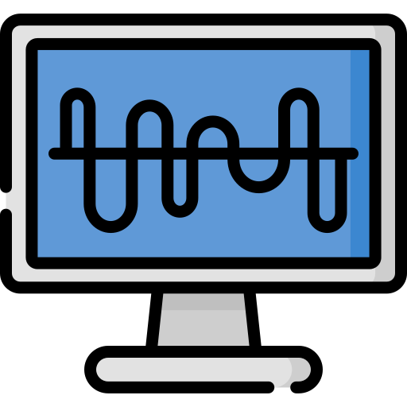

Simulador de Canal de Comunicação
Escolha o tipo de sinal:
Onda Quadrada
Onda Triangular
Onda Dente-de-Serra
Onda Senoidal Retificada
Digite a frequência fundamental (1 kHz - 100 kHz):
Escolha o tipo de canal:
Selecione...
Canal Passa-Baixas
Canal Passa-Faixas
Digite a frequência de corte (1 kHz - 100 kHz):
Digite a primeira frequência de corte inferior (1 kHz - 100 kHz):
Digite a segunda frequência de corte superior (1 kHz - 100 kHz):
Avançar